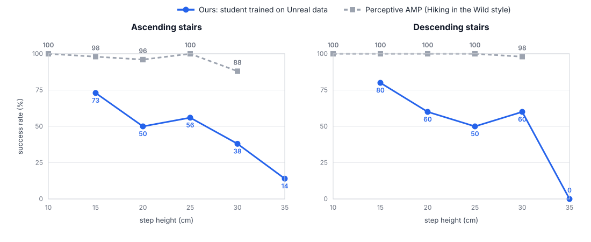

Scene-Aware Humanoid Locomotion via
Unreal Engine based Data Generation
Can a game engine generate the terrain + motion data that motion-tracking humanoids are missing?
- Motion tracking gives humanoids natural gaits, but motion data is almost all flat ground. Video real-to-sim (VideoMimic, CRISP) gives terrain, but the scenes and motions are often misaligned.
- We put the Unitree G1 into Unreal Engine (rig, retargeted base motions, custom G1 IK solver), generated stair data procedurally, and trained a terrain-aware tracking teacher and a command-following student.
- Slopes worked well. Stairs and ledges hit a limit of Unreal's character physics: feet still sank into steps, and fixing it properly means modifying the engine itself.
- On our stair benchmark, the student lost clearly to a perceptive AMP baseline in the style of Hiking in the Wild, so we stopped. This page documents what we built, what broke, and what we learned.
Motivation
| Approach | Limitation we observed |
|---|---|
| Reward-based RL | Rewards must be redesigned per terrain; gaits are unnatural (crouched posture, bent knees, limping). |
| AMP | More human-like style, but style and task rewards can conflict. |
| Motion tracking (BeyondMimic, SONIC) | Natural motion and a simple reward, but the data is flat-ground MoCap with no terrain. |
| Video real-to-sim (VideoMimic, CRISP) | Depth and contact errors misalign scene and motion (floating, sliding, penetration); needs full-body footage per terrain and heavy per-video processing. |

Development log

Step 1 · Putting the Unitree G1 into Unreal Engine
Importing the mesh is not enough: Unreal animates skeletal meshes, so we built a G1 rig (a skeleton whose bones match the robot's 29 joints) and a physics asset for collision. Moving assets across Isaac → Blender → Unreal was the first pain point: every tool uses a different world frame, and bones carry local frames, so rotations came out wrong for days until the axis conventions were matched joint by joint.
Step 2 · Transplanting the ALS base motions onto the G1
Rather than authoring motions from scratch, we transplanted the ALS base motion set (idle, walk, run, turns) onto the G1 and swapped the character inside the ALS controller. Retargeting was harder than expected: off-the-shelf retargeters (GMR) broke when the source body size differed from the G1 (legs over-stretched or crushed), and physics-based retargeting (PhySINK) filtered out dynamic motions. We ended up with a chain UE Mannequin → mannequin-shaped SMPL → G1-shaped SMPL → G1, plus foot-contact, ankle-tilt and bone-length corrections so the feet land flat.

Step 3 · Problem: feet sink and float on uneven ground
Unreal's character movement keeps the capsule on the surface, but the animated feet do not know about the terrain. On ramps and stairs the G1's feet sank into the ground or floated above it. Unreal's standard fix, the built-in two-bone foot IK in the ALS rig, assumes a human leg; on the G1's joint layout and limits it produced twisted legs and joint-limit violations, so the motions were not transferable to the robot.
Step 4 · A custom G1 IK solver inside Unreal
We wrote an IK solver for the G1's own kinematic chain (respecting its joint limits) and embedded it in the Unreal animation graph in place of the two-bone IK. On ramps this fixed the problem: the feet now follow the slope.
Step 5 · Stairs and ledges: a wall we could not get past
Linear height changes (ramps) were fine. Abrupt height changes (stairs, ledges) were not: feet still caught step edges and sank into treads. We tried a series of heuristics:
- ray casts from the toe and heel so the foot never penetrates a surface;
- looking ahead in the height map to plan the next foothold and adapt stride length to the step depth;
- lifting the foot higher when the terrain height changes, and adding new foot-lifting and stair-specific motions (captured with GVHMR / SAM-3D-Body);
- blend spaces without root motion and a custom character-movement component for stairs.
Each helped partially, but the root cause is how Unreal's physics and character movement move the body relative to the animation (root motion from blend spaces could not be extracted and timed correctly, a long-standing engine issue). Solving it properly means modifying Unreal's physics / movement code in C++, which was far beyond the scope of the project. We decided to continue with the data we could produce.
Step 6 · Sanity check: can a policy track one motion?
Before scaling up, we checked that a single Unreal motion can be tracked in Isaac Lab on its terrain: ramps, stairs and climbing a ledge. All worked.
Step 7 · Scaling up stair data and training teacher → student
Using stairs as the target terrain, we generated many staircases procedurally (linear and spiral layouts, randomized step height, depth and count) and let the G1 walk them automatically, at about 6 hours of motion per hour. We trained a terrain-aware multi-motion tracking teacher on this data, distilled it into a student that follows velocity commands (DAgger), and fine-tuned the student with PPO.

Results
The teacher fits Unreal data far more easily than video-reconstructed data (both numbers are on each policy's own training motions). Most teacher failures were ascending motions outside the blend space's anchor clips.
Benchmark: unseen staircases vs. perceptive AMP
We built an evaluation benchmark of unseen staircases (ascending and descending, randomized step height and depth, several steps per flight) and compared our student against a perceptive AMP policy in the style of Hiking in the Wild. A trial succeeds if the robot reaches at least 90% of the distance to the goal.

Why we stopped
- We lost clearly to the baseline. On stairs, a perceptive AMP policy already succeeds 88–100% of the time with reasonably natural gaits; our student did not come close.
- The bottleneck is inside Unreal. Physically plausible data for stairs and ledges needs changes to Unreal's physics and character movement at the C++ level, which is hard to debug and very costly in time for someone who is not an Unreal engineer. If coding agents become fluent enough in Unreal internals, this becomes much more feasible; today it is not.
- Simple uneven terrain is already solved by RL. For stairs, slopes and rough ground, existing reward designs are enough. Motion data is not the missing piece there.
Outlook & lessons
- Where this idea could still pay off: tasks where the realistic scene matters, or terrain that needs skills reward design struggles with, such as narrow passages, crawling or climbing. If basic motions for such terrain can be authored in a game engine and transplanted to the robot, those tasks may become learnable.
- Game engines are good at geometry, not motion. Terrain and alignment come almost for free; physically plausible motion on abrupt height changes does not.
- Data quality beats training tricks. Clean, aligned data needed little reward engineering; noisy video data depended heavily on pretraining.
- Validate against the strongest simple baseline early. Comparing against Hiking in the Wild-style AMP sooner would have redirected the project earlier.
Related work
Hiking in the Wild · VideoMimic · CRISP · SONIC · PHUMA